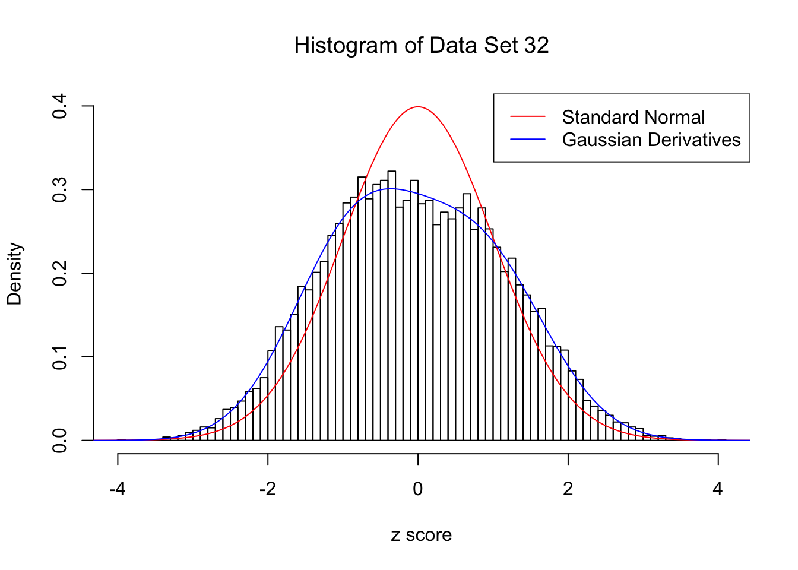
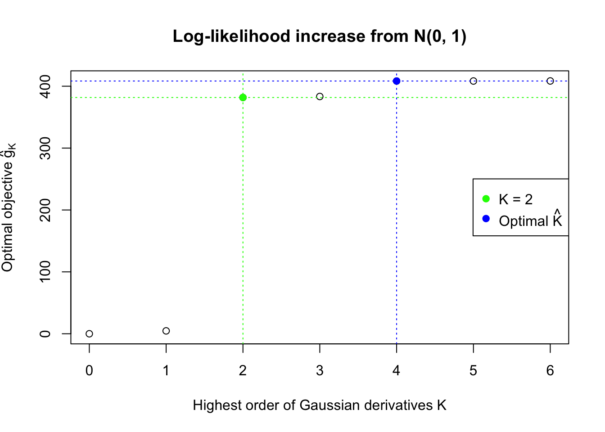
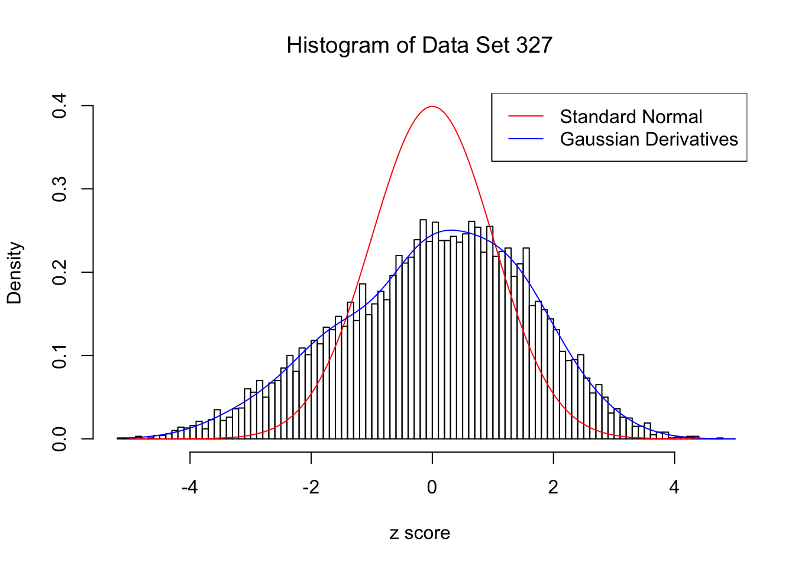
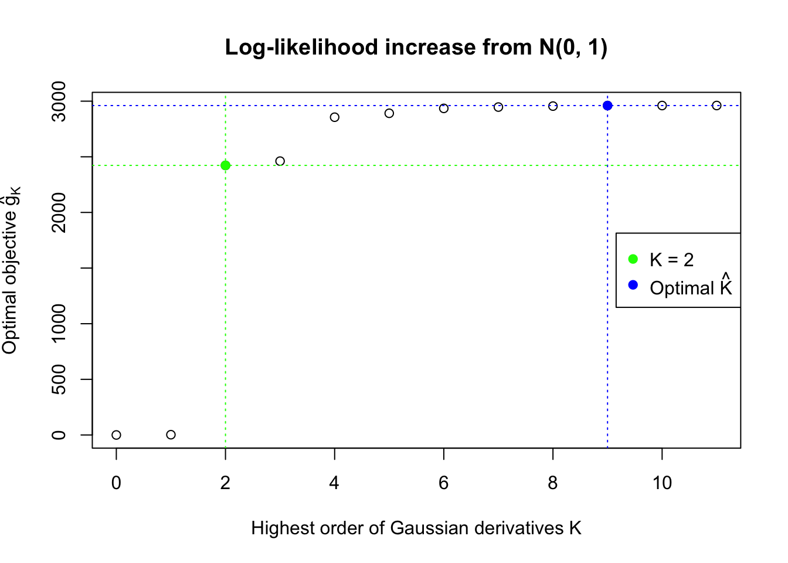
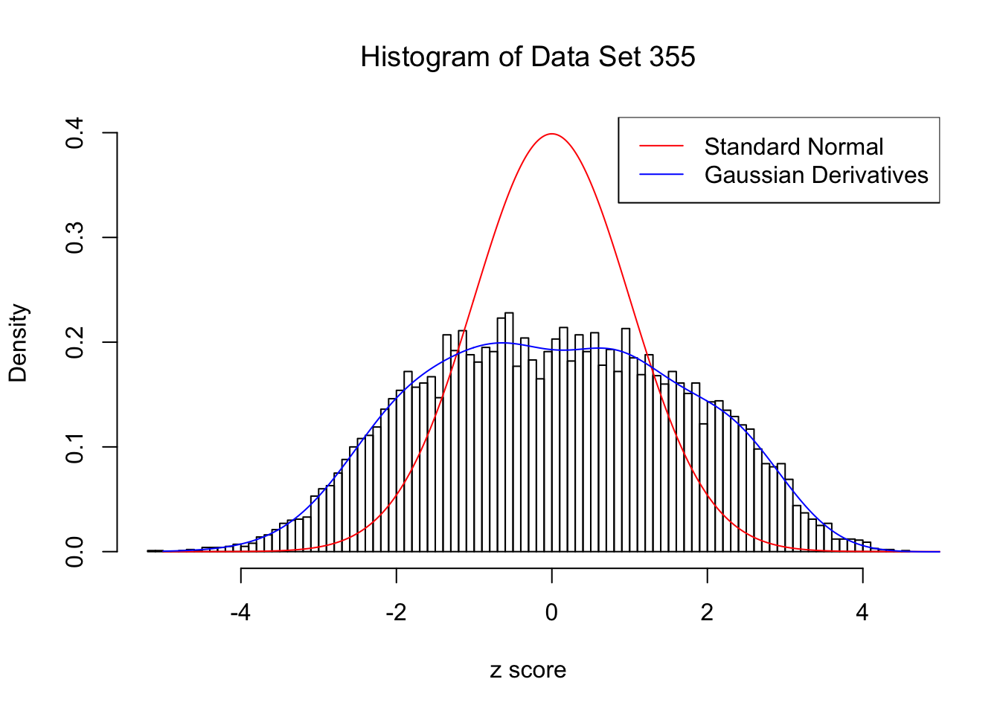
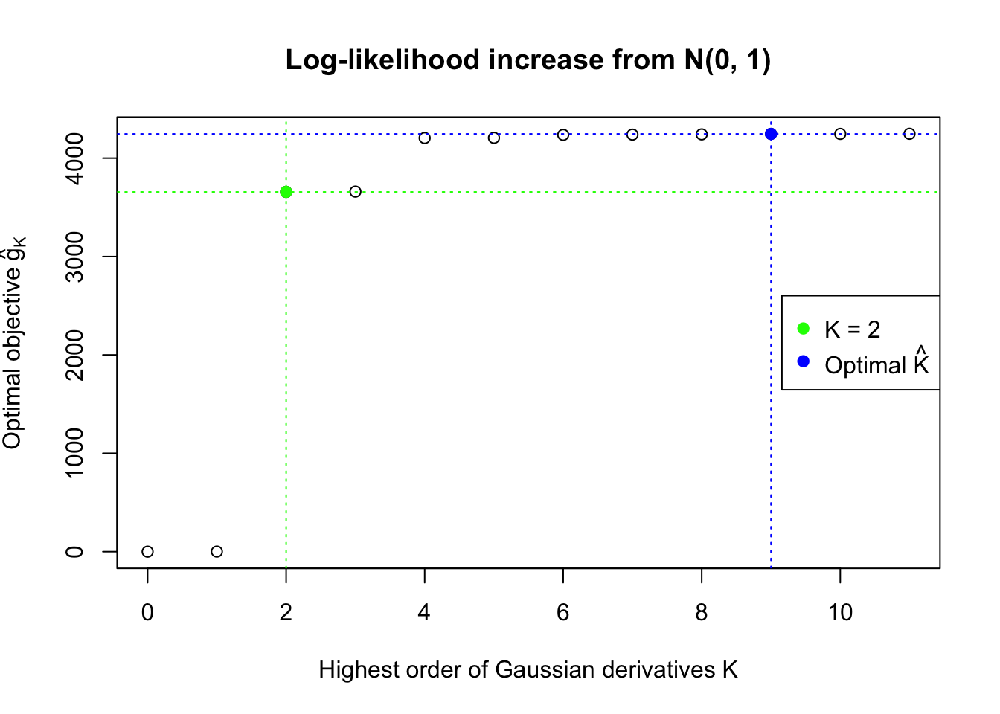
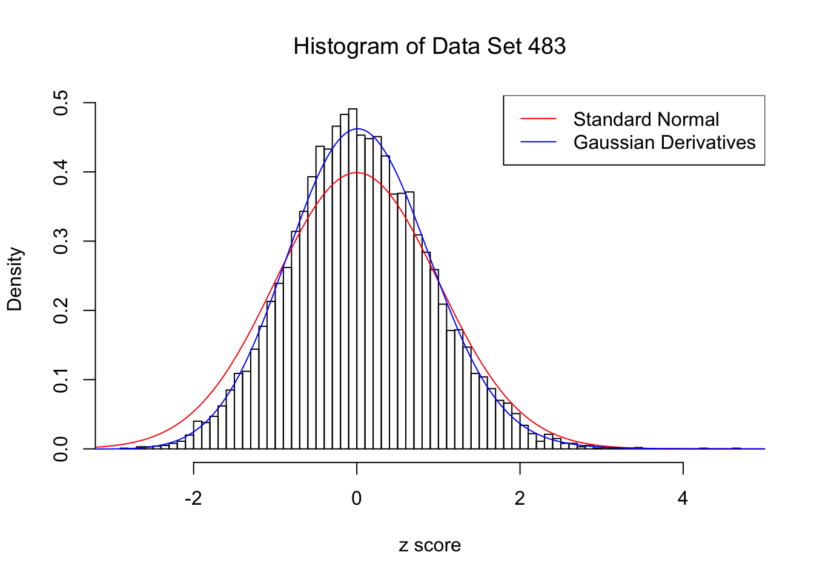
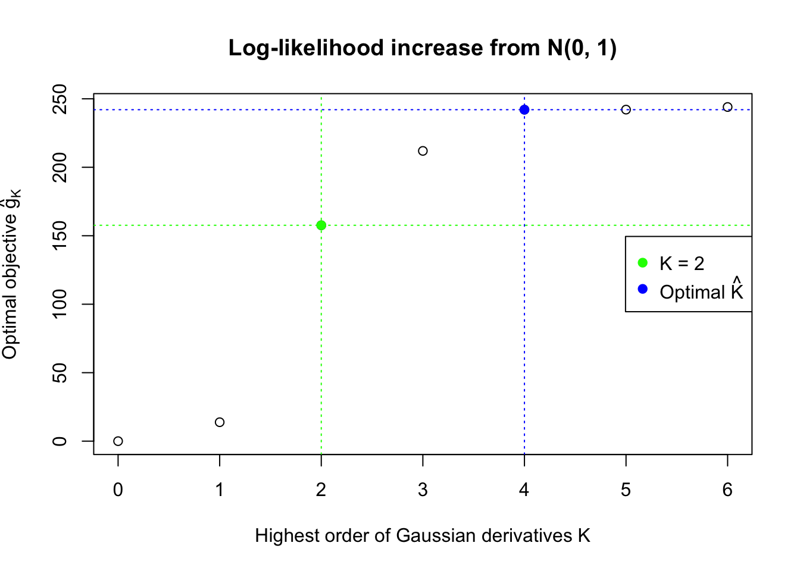
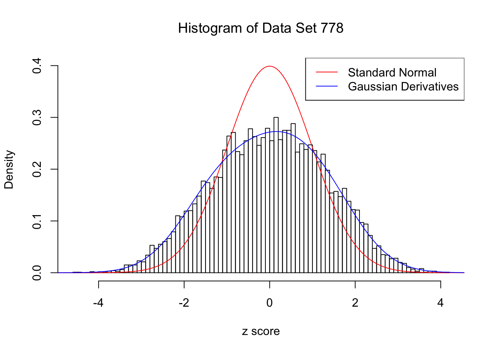
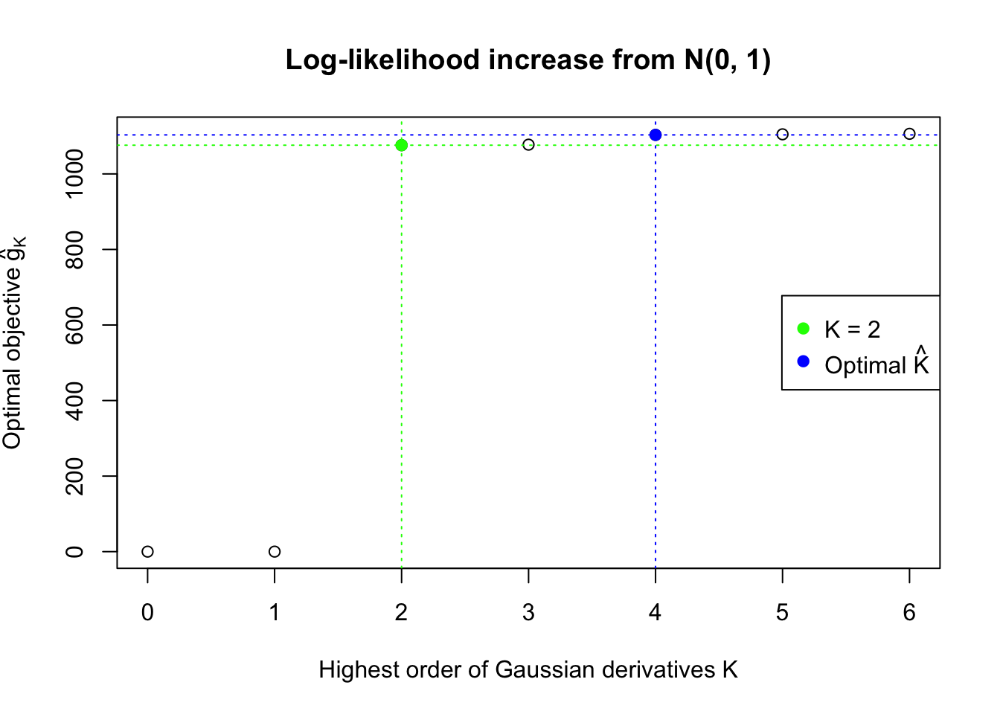

Last updated: 2017-12-21
Code version: 6e42447
With all the assumptions, we formulate a convex optimization as follows.
\[ \begin{array}{rl} \max\limits_{w_1, \ldots, w_K} & \sum\limits_{i = 1}^n\log\left(1 +\sum\limits_{k = 1}^K w_kh_k(z_i)\right)\\ \text{s.t.} & 1 + \sum\limits_{k = 1}^K w_kh_k(z_i) \geq0 \end{array} \] It can also be written as
\[ \begin{array}{rl} \max\limits_{w} & \sum\log\left(1 +Hw\right)\\ \text{s.t.} & 1 +Hw \geq0 \end{array} \]
where \(H_{ik} = h_k(z_i)\).
With finite \(K\) Gaussian derivatives, the fitted log-likelihood \(\log\prod\limits_{i = 1}^nf_0(z_i) = \sum\limits_{i = 1}^n\log \varphi(z_i) + \sum\limits_{i = 1}^n\log\left(1 +\sum\limits_{k = 1}^K \hat w_kh_k(z_i)\right)\). Note that \(\hat w_k \equiv 0\) is a feasible solution, so the optimal solution will always have a log-likelihood no less than \(\sum\limits_{i = 1}^n\log \varphi(z_i)\), the log-likelihood of \(N(0, 1)\). Similarly, let \(\hat w_K\) be the optimal solution with \(K\) Gaussian derivatives, then \([\hat w_K, 0]\) will be a feasible solution with \(K + 1\) Gaussian derivatives, with the same objective value, which should be no larger than the optimal objective value for \(K + 1\). This fact implies that the fitted log-likelihood should be non-decreasing with respect to \(K\).
This property implies that for the same data set, multiple models with increasing \(K\)’s can be fitted, and the searching stops at a sufficiently large \(K\). Let \(\hat g_K = \max\limits_w\sum\limits_{i = 1}^n\log\left(1 +\sum\limits_{k = 1}^K w_kh_k(z_i)\right) = \sum\limits_{i = 1}^n\log\left(1 +\sum\limits_{k = 1}^K \hat w_kh_k(z_i)\right)\), the optimal objective value for \(K\), drawing on insight from the likelihood ratio test, the optimal \(\hat K = \inf\left\{K: 2(\hat g_{K + m} - \hat g_K) \leq \chi_{m, 1-\alpha}^2, m = 1, \ldots, M\right\}\) with pre-specified \(\alpha\) and \(M\).
\(M\) should be greater than \(1\) because odd order Gaussian derivatives and even order ones have distinct properties, especially in lower orders. Odd order Gaussian derivatives are odd functions, more associated with the skewness of the empirical distribution, whereas even order ones are even functions, more associated with its kurtosis. Therefore, it’s not at all impossible that the difference in the log-likelihood objective between \(K\) and \(K + 1\) is small, yet that between \(K\) and \(K + 2\) is large.
The function ecdfz.optimal in the script ecdfz.R is using this rule with the default setting \(\alpha = 0.05, M = 2\).
cvxrThe script ecdfz.R is using cvxr to find the maximum likelihood estimate of the observed density of correlated null \(z\) scores.
source("../code/ecdfz.R")z = read.table("../output/z_null_liver_777.txt")
p = read.table("../output/p_null_liver_777.txt")Several selected ash-hostile and/or BH-hostile data sets are fitted as follows. More detailed information of these selected data sets are here and here.
For each of these selected data sets, we plot the histogram, the density of \(N(0, 1)\) in red line, and that fitted by Gaussian derivatives in blue. We also give the information of the number of false discoveries by Benjamini-Hochberg, and \(\hat\pi_0\) estimated by ash. Note that BH’s false discoveries suggests the inflation of the most extreme observations, whereas ash’s \(\hat\pi_0\) the empirical distribution’s general deviation from \(N(0, 1)\).
We also plot the optimal objective \(\hat g_K\) for all the fitted \(K\), and indicate the optimal \(\hat K\) found according to the aforementioned rule. It appears the second order derivative is usually the most important, followed by the fourth.
library(ashr)
DataSet = c(32, 327, 355, 483, 778)
res_DataSet = list()
for (i in 1:length(DataSet)) {
zscore = as.numeric(z[DataSet[i], ])
fit.ecdfz = ecdfz.optimal(zscore)
fit.ash = ash(zscore, 1, method = "fdr")
fit.ash.pi0 = get_pi0(fit.ash)
pvalue = as.numeric(p[DataSet[i], ])
fd.bh = sum(p.adjust(pvalue, method = "BH") <= 0.05)
res_DataSet[[i]] = list(DataSet = DataSet[i], fit.ecdfz = fit.ecdfz, fit.ash = fit.ash, fit.ash.pi0 = fit.ash.pi0, fd.bh = fd.bh, zscore = zscore, pvalue = pvalue)
}Data Set 32 : Number of BH's False Discoveries: 0 ; ASH's pihat0 = 0.184423 ; Chosen number of Gaussian derivatives K = 4
Optimal weights of Gaussian derivatives w =
1 : -0.0365352616939748 ; 2 : 0.1999283988026 ; 3 : 0.0104709711917952 ; 4 : -0.0201268873245717 ;
Data Set 327 : Number of BH's False Discoveries: 489 ; ASH's pihat0 = 0.1522796 ; Chosen number of Gaussian derivatives K = 9
Optimal weights of Gaussian derivatives w =
1 : 0.0339429040246409 ; 2 : 0.73456039139193 ; 3 : -0.153251399156623 ; 4 : 0.188391233293932 ; 5 : -0.0550489496726788 ; 6 : 0.0229717983852805 ; 7 : -0.00690839817896393 ; 8 : 0.00121590052122215 ; 9 : -0.000314826111681546 ;
Data Set 355 : Number of BH's False Discoveries: 639 ; ASH's pihat0 = 0.04750946 ; Chosen number of Gaussian derivatives K = 9
Optimal weights of Gaussian derivatives w =
1 : 0.0226254633548931 ; 2 : 0.921396261289049 ; 3 : 0.0218042845603059 ; 4 : 0.17609829567166 ; 5 : -0.0137967389059908 ; 6 : 0.00396812175677823 ; 7 : -0.00490495150100676 ; 8 : -0.000608489154565857 ; 9 : -0.000298931322154747 ;
Data Set 483 : Number of BH's False Discoveries: 1 ; ASH's pihat0 = 0.9998824 ; Chosen number of Gaussian derivatives K = 4
Optimal weights of Gaussian derivatives w =
1 : 0.045465618357444 ; 2 : -0.127037015386377 ; 3 : 0.00972556942208551 ; 4 : 0.0105165371329065 ;
Data Set 778 : Number of BH's False Discoveries: 1 ; ASH's pihat0 = 0.07619716 ; Chosen number of Gaussian derivatives K = 4
Optimal weights of Gaussian derivatives w =
1 : 0.00594319611757542 ; 2 : 0.398070908599464 ; 3 : -0.00922245793412396 ; 4 : 0.026306961083798 ;
Gaussian derivatives can deal with a variety of empirical null distribution, especially those not close to normal.
sessionInfo()R version 3.4.3 (2017-11-30)
Platform: x86_64-apple-darwin15.6.0 (64-bit)
Running under: macOS High Sierra 10.13.2
Matrix products: default
BLAS: /Library/Frameworks/R.framework/Versions/3.4/Resources/lib/libRblas.0.dylib
LAPACK: /Library/Frameworks/R.framework/Versions/3.4/Resources/lib/libRlapack.dylib
locale:
[1] en_US.UTF-8/en_US.UTF-8/en_US.UTF-8/C/en_US.UTF-8/en_US.UTF-8
attached base packages:
[1] stats graphics grDevices utils datasets methods base
other attached packages:
[1] CVXR_0.94-4 EQL_1.0-0 ttutils_1.0-1
loaded via a namespace (and not attached):
[1] Rcpp_0.12.14 knitr_1.17 magrittr_1.5
[4] bit_1.1-12 lattice_0.20-35 R6_2.2.2
[7] stringr_1.2.0 tools_3.4.3 grid_3.4.3
[10] R.oo_1.21.0 git2r_0.20.0 scs_1.1-1
[13] htmltools_0.3.6 yaml_2.1.16 bit64_0.9-7
[16] rprojroot_1.3-1 digest_0.6.13 Matrix_1.2-12
[19] gmp_0.5-13.1 ECOSolveR_0.3-2 R.utils_2.6.0
[22] evaluate_0.10.1 rmarkdown_1.8 stringi_1.1.6
[25] compiler_3.4.3 Rmpfr_0.6-1 backports_1.1.2
[28] R.methodsS3_1.7.1This R Markdown site was created with workflowr